Bienvenido al Cenote Yokdzonot
Disfruta de la naturaleza de una manera única en las cristalinas aguas de Yucatán.
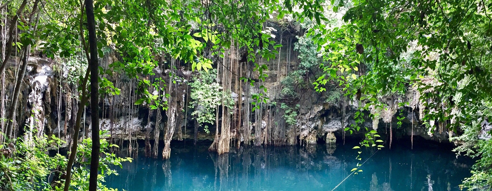
🌿 Naturaleza en estado puro
Sumérgete en las aguas cristalinas del Cenote Yokdzonot, un tesoro natural escondido en el corazón de Yucatán. Perfecta para nadar, snorkelear y conectar con la naturaleza.

🤿 Aventura bajo el agua
Descubre un mundo subacuático único. Las estalactitas y la luz que penetra desde la superficie crean un espectáculo visual incomparable que no olvidarás.

👨👩👧 Ideal para toda la familia
Un lugar seguro y mágico para vivir momentos únicos con tu familia. Actividades para todas las edades en un entorno natural privilegiado de Yucatán.

📍 Ubicación Exacta
Cenote Yokdzonot, Yucatán, México
📮 Calle 20 s/n, entre calle 27 y calle 29, 97922 Yokdzonot, Yuc.
¡Encuéntranos fácilmente con la ruta directa desde tu ubicación!
🖼️ Galería
Descubre la belleza del cenote a través de estas imágenes
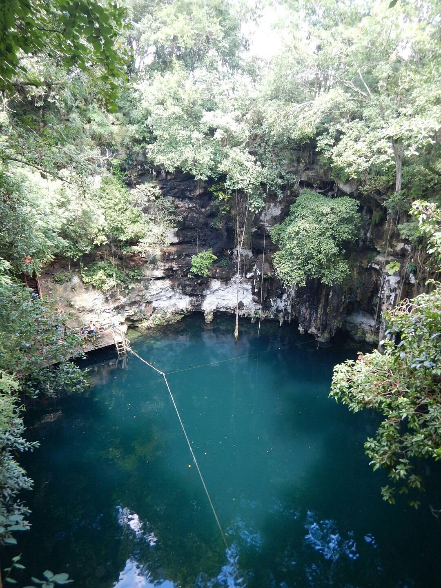


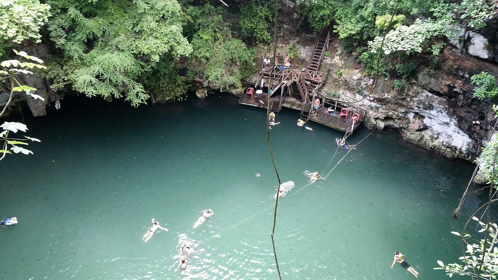
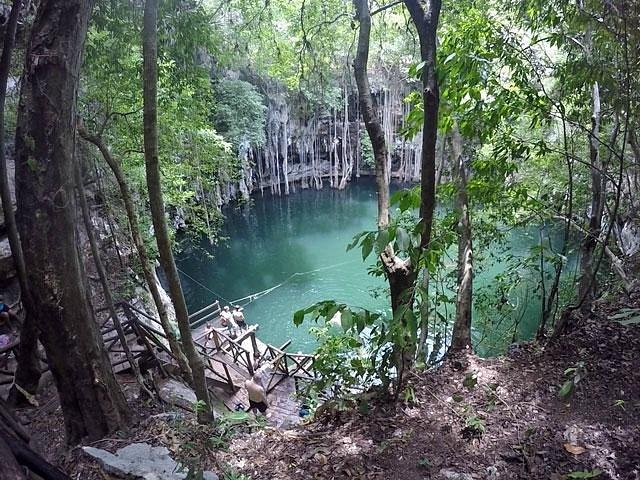
🔭 Vista 360°
Explora el cenote en una experiencia inmersiva de 360 grados
Vista 360° — Cenote
Sumérgete en una vista panorámica del cenote desde adentro
Vista 360° — Entorno
Descubre el entorno natural que rodea el cenote en panorámica
🌿 Zonas verdes
Explora más imágenes del cenote
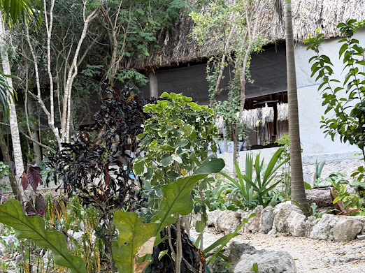
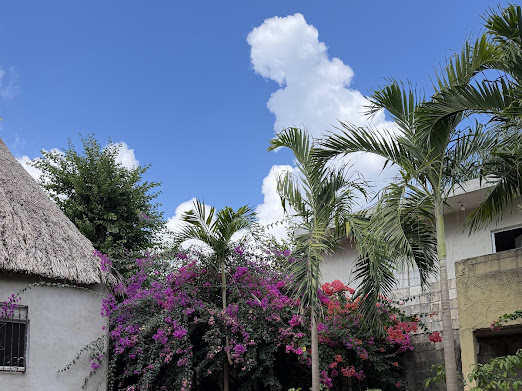
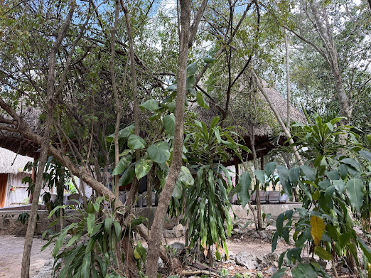
🎬 Videos
Explora el cenote en video
🏡 Sitios además del cenote
Explora más el lugar donde se encuentra el cenote


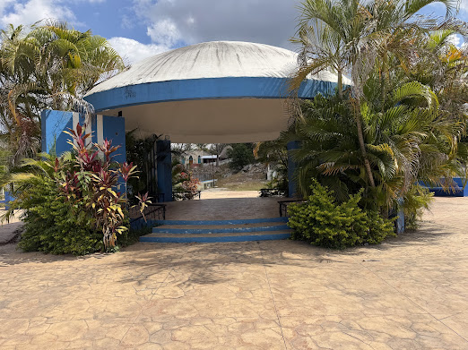
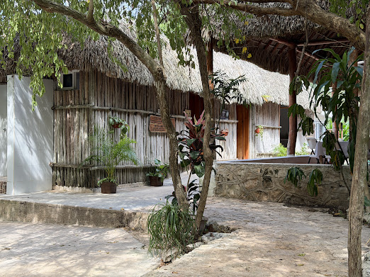
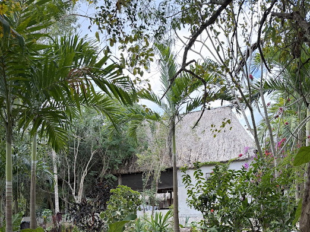
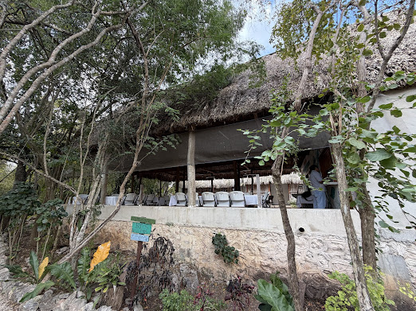
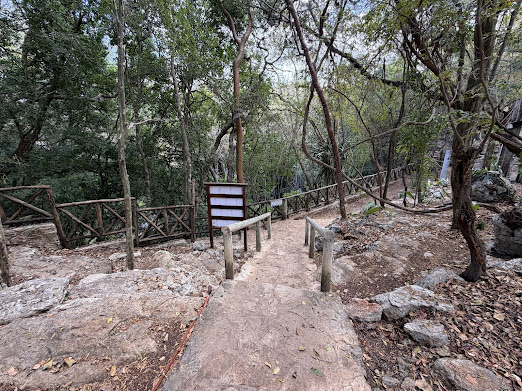
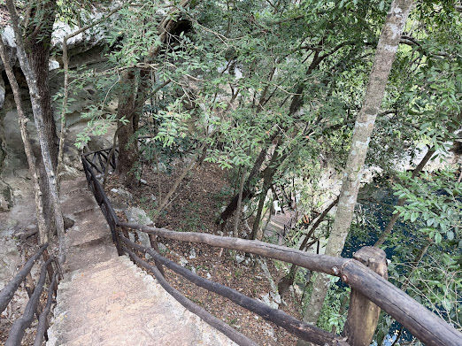
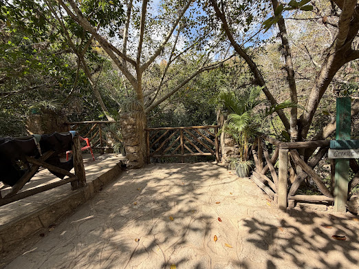
📞 Contáctanos
Horario
🗓️ Reserva ya mismo| Miércoles | 9 a.m. – 5 p.m. |
| Jueves | 9 a.m. – 5 p.m. |
| Viernes | 9 a.m. – 5 p.m. |
| Sábado | 9 a.m. – 5 p.m. |
| Domingo | 9 a.m. – 5 p.m. |
| Lunes | 9 a.m. – 5 p.m. |
| Martes | 9 a.m. – 5 p.m. |